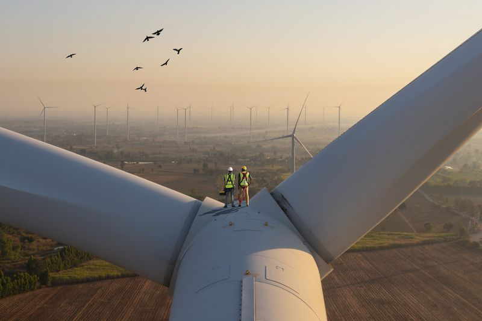

Founded on the principles of democracy, social justice and intersectionality, advancing the UN's Sustainable Development Goals through grant initiatives.
The SRM Foundation was formed to advance the vision of a properly structured transition to sustainability. We recognise the clean energy transition as an essential facet of democracy, promoting social justice and climate action through responsible local energy governance.
As we embark on this journey, the SRM Foundation pledges its commitment to transparency, collaboration, and unwavering dedication to a cleaner, more sustainable future for generations to come.

Our approach acknowledges the correlation of environmental, social and economic issues affecting today's society. Through our initiatives, we seek to embrace holistic solutions contributing to the transition from an extractive to a regenerative economy.
We partner with like-minded organisations that share our views on the energy transition to provide support to worthy projects in the areas of advocacy and government policy, research and innovation, and education.
At its core, the SRM Foundation was established on the principles of democracy, social justice and intersectionality as the basis for advancing the UN's Sustainable Development Goals through our grant initiatives.
In line with our charitable status, the SRM Foundation aims to benefit the public through the advancement of these charitable objectives, focused on the clean energy transition.
Conserve, protect and restore the physical and natural environment, mitigating the effects of pollution, deforestation and carbon dioxide emissions.
Advance the education of the public in sustainability, environmental protection, clean energy and related subjects.
Engage in and support research into sustainability, environmental protection and clean energy.
Relieve financial hardship and unemployment among those in need as a result of youth, age, ill-health, disability or other disadvantage.
Advocate for policies and initiatives that prioritise vulnerable populations, ensuring the benefits of the transition are shared equitably.
Such other exclusively charitable purposes as the Trustees may in their absolute discretion determine.
The scientific consensus on climate change is clear. Below are the core reasons that anchor everything we do.
The scientific consensus on climate change is clear, with the consequences of inaction becoming increasingly apparent. Extreme weather events, rising sea levels, and disruptions to ecosystems all underscore the urgent need for a transformative response.
A green energy transition represents a crucial step towards mitigating the impacts of climate change, reducing greenhouse gas emissions, and fostering a resilient and sustainable future.
Beyond environmental considerations, the shift towards green energy holds immense economic and social potential. Investing in renewable energy sources and technologies can drive economic growth, create jobs, and foster innovation.
By transitioning to a green energy economy, we can build a more inclusive and equitable society, providing opportunities for communities to thrive while leaving no one behind.
Embracing a green energy transition signifies our commitment to responsible environmental stewardship. By harnessing the power of renewable resources such as solar, wind, and hydropower, we can significantly reduce our reliance on finite fossil fuels, mitigating environmental degradation and protecting biodiversity.
Central to our stance is the recognition that the green energy transition necessitates continuous technological innovation and robust research efforts. We support investments in research and development to enhance the efficiency and affordability of renewable technologies, storage solutions, and smart grid systems.
At the heart of our commitment is the principle of social justice. A green energy transition must be inclusive, considering the needs and rights of all communities. We advocate for policies and initiatives that prioritise vulnerable populations, ensuring that the benefits of the transition are shared equitably and that no one is disproportionately burdened by the challenges it may present.
The SRM Foundation actively seeks collaborative partnerships with government entities, businesses, higher-education institutions with energy transition research programmes, and other charitable organisations. Meaningful change requires collective action. By fostering partnerships, we leverage collective expertise, resources, and influence to drive systemic change.
Central to our mission is the belief in the power of education and public awareness. Through educational programmes, outreach initiatives, and collaboration with academic institutions, we aim to empower individuals, communities, and policymakers with the knowledge and tools needed to actively contribute to the green energy transition.
At the SRM Foundation, we stand at the forefront of advocating for and championing the cause of a properly structured green energy transition. Transitioning to a sustainable, green energy system is not merely a choice but an imperative for the well-being of our planet and future generations. Our grant-making programme is governed by a Board of Trustees (two Viaro Group board members alongside four independent trustees) that ensures that projects selected are within the foundation's scope.
The SRM Foundation's vision and strategy is spearheaded by its chief executive Francesco Mazzagatti, alongside a board of independent trustees.
As the CEO of Viaro Energy, a UK-based independent upstream energy company, Mr Mazzagatti is a vocal advocate for the importance of energy security in the transition to sustainability. This is reflected in Viaro Energy's operations, its approach to ESG responsibilities, and his personal involvement in organisations promoting industry best practices towards a properly structured energy transition. In parallel with his efforts at Viaro, the establishment of the SRM Foundation represents his contribution to a long-term vision for a more sustainable future.
Currently serving as CFO at Viaro Group, Francesco began his career in the banking sector in 2006, initially as a credit risk manager who then transitioned into auditing roles. He served as Senior Auditor at the European Fund for Business Development between 2012 and 2018, when he also served as Senior Certifier for a project co-financed by Interreg Med, aimed at fostering sustainable growth in the Mediterranean region. Since 2014, Francesco has volunteered at the Oratorio Salessiano Don Bosco, which provides assistance to disabled children, alongside other charitable endeavours.
After a long and distinguished career in various military and political advisory roles, Sir Mayall has considerable experience in UK government legislation. He currently serves as Chairman of the National Army Museum, non-executive director at Viaro Energy Ltd, and senior advisor at several investment banks including Greenhill & Co., ADRe and Coutts Bank. His awards include Knight Commander of the Order of the British Empire, Companion of the Order of the Bath, the Queen's Commendation for Valuable Service, and Officer of the Legion of Merit (US).
Ana's journey in the realm of law began at the University of Lisbon School of Law, where she earned her degree in 1990. She then underwent an intensive three-year training at the Centre for Judicial Studies to qualify as a judge. Since then she has been a stalwart presence in the legal arena, currently holding the esteemed position of a criminal Judge at the Lisbon Central Criminal Court. Her commitment to excellence extends beyond her courtroom duties, and she diligently participates in national and international training courses each year.
Anna commenced her professional journey at Morgan Stanley, serving as an Executive Assistant to the CEO, where she worked closely with Sir John Scarlett, former director of the British Intelligence MI6. Her collaboration with Sir John extended past her time at Morgan Stanley, having served as his business advisor for six years. Anna has since progressed to operational positions close to the offices of energy CEOs at NEO Energy and currently HitecVision AS. She actively contributes to her community through volunteer work with the Rotary Club and channels her passion for running by participating in various 10k charity races.
Robert held several positions during his distinguished career at the Central Intelligence Agency (CIA) from 1991 until 2007, including as Chief of a pivotal operational division within the CIA and Chief of Station in several countries. During this period, he cultivated robust alliances with policymakers and collaborated closely with key Cabinet members. Since then, Robert has held significant roles in the private sector, notably as managing director at the Washington, D.C. and NY branches of Deloitte, where he was responsible for shaping their business development strategies alongside independent strategic advisory services for high-value clients.
Discover the projects and partnerships driving our mission forward.
Our Initiatives